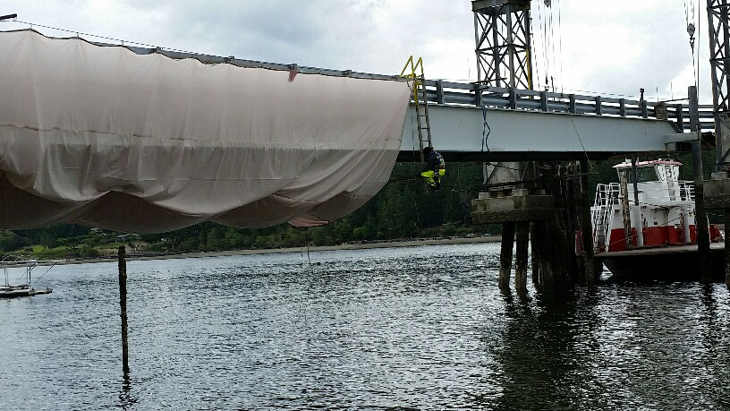
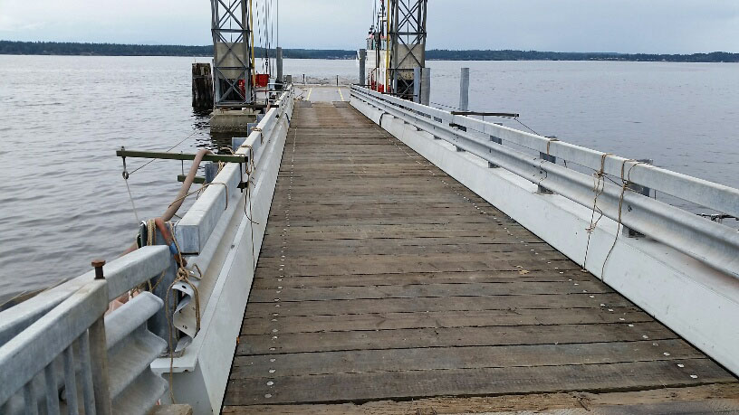
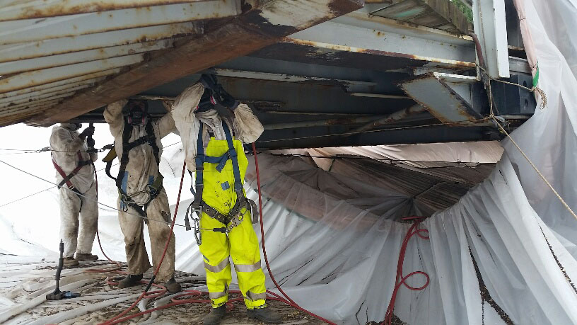
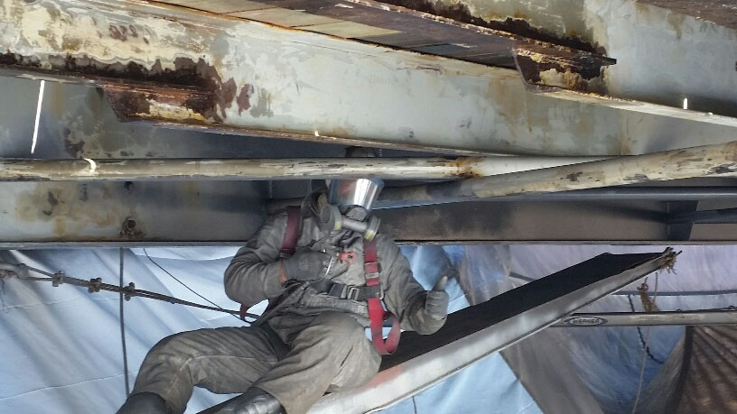
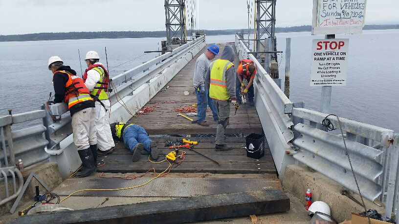

Burn Ban and Ramp Painting UpdateSeptember 24, 2015
Burn Ban Update: The Herron Island outdoor burn ban remains in effect through the end of the ramp painting project. Pierce County has lifted its Burn Ban, but the island's remains, since emergency access to the island is limited. Thanks for your cooperation.
Ramp Painting Update: As of this moment, it appears that hard work and favorable weather will support getting this project done well ahead of schedule. Painting of both sides should be complete by Friday afternoon. Then, the rigging will be removed and there remain some timbers to install and some takedown tasks. Do not plan on vehicle access until early to mid-week next week. Please note that official updates with come from the HMC office which does not post on Facebook or other social media, and any questions should be directed there or to memberinput@herronisland.org. Thanks to John Farris for sharing his photos. We'll be able to tell you more later this weekend. The global Gmail account is down right now, but we'll do our best to get it fixed. Thanks to everyone for their cooperation and patience. Scroll Down      |